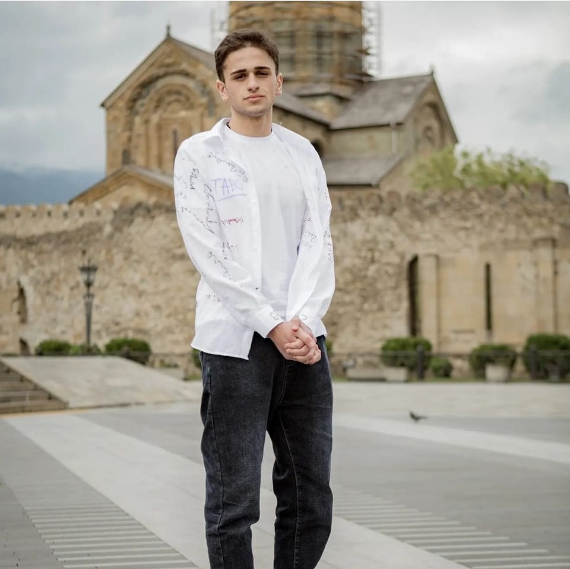
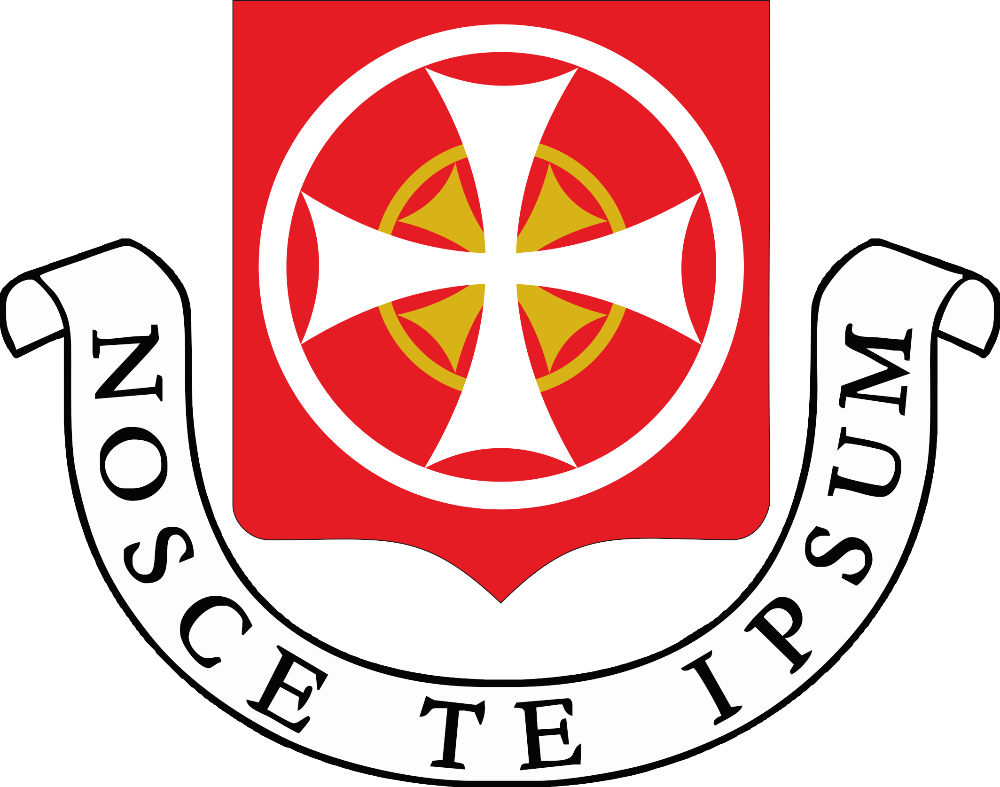

<div class="container">
    
    <div class="row">
    
    <div class="col-lg shadow border m-1">
        <div class="text-center">
            <h2>About The Person</h2>
            
            <p>
                <br>
                <b>
                Davit Eliashvili is a Georgian front end developer, who studies at the Georgian University named after St.
                 Andrew the First, and in parallel takes courses under the mentorship of Giorgi Ptskialadze, in the past he has worked on Python, 
                 Java, 
                Node JS and various programming languages, currently he does not have a job and is focused on studies
                </b>
        
                <br>
                <br>
                
                

            </p>
        </div>
    </div>
    <div class="col-lg shadow border m-1">
        <div class="text-center">
            <h2><b>The Features He Works On Now</b></h2>
            <h4>{{featuredProject.name}}</h4>
        </div>
        
        <carousel>
            <div *ngFor="let picture of featuredProject.pictures">
                <slide></slide>
            </div>
        </carousel>
        <p class="mt-2">{{featuredProject.summary}}</p>
        <p><b>Visit The Portfolio Session To Learn More</b></p>
    </div>

</div>